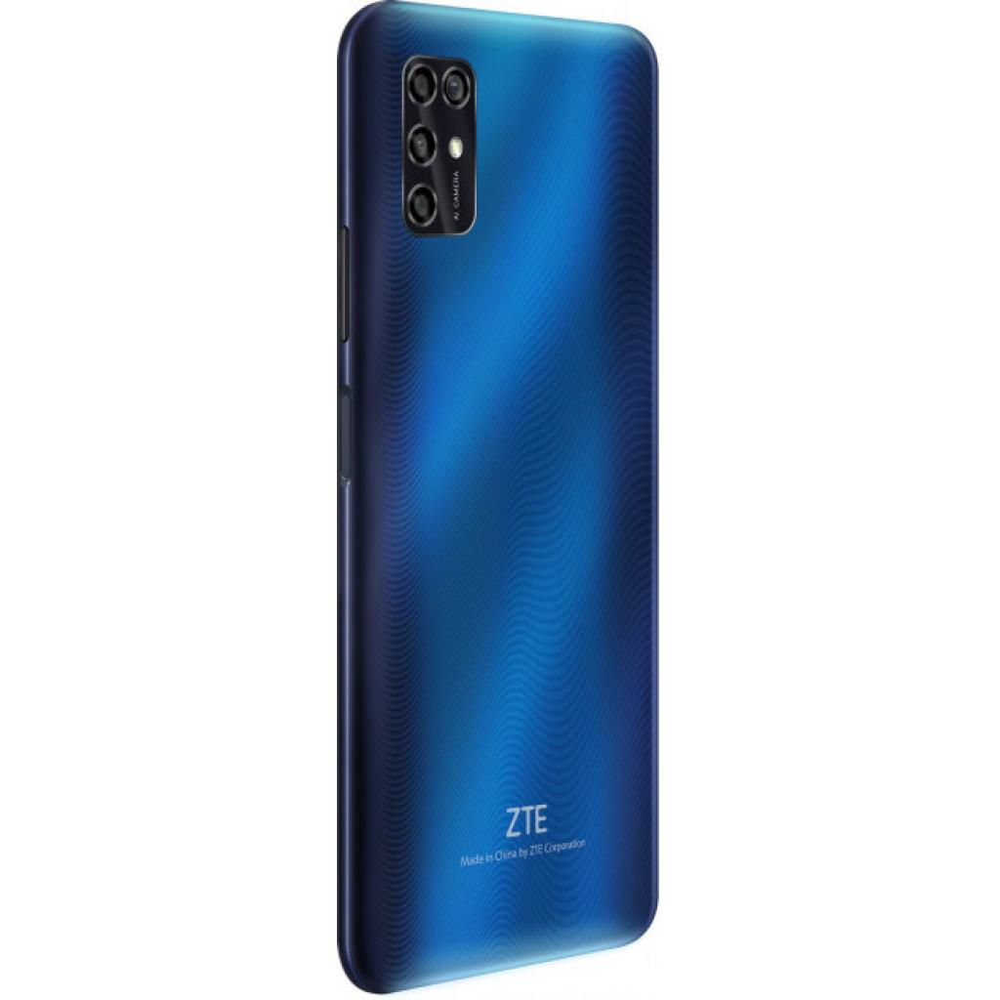

ZTE Blade V2020 Smart обладнано 6.82-дюймовим TFT-дисплеєм з роздільною каплевидним вирізом під фронтальну камеру і дозволом 1640x720 пікселів. В основі смартфона використовується восьміядерний процесор Unisoc SC9863A, що працює на частоті до 1.6 ГГц.
Пристрій має 4 ГБ оперативної пам'яті. Для зберігання даних передбачено 128 ГБ флеш-пам'яті. Гаджет обладнаний гібридним слотом для установки SIM-карти і карти пам'яті стандарту microSD. Обсяг батареї смартфона становить 5000 мА * год, вона має підтримку зарядки потужністю 10 Вт.
Що стосується камер, то спереду використовується один 8 Мп датчик. Тильна представлена чотирма модулями. Дозвіл основного становить 16 Мп. У компанію до нього виділили 8 Мп датчик з ширококутного оптикою, а також 2 Мп сенсор прорахунку глибини сцени і 2 Мп марко об'єктив.
Виробник: ZTE. Гарантія: 12 міс. Колір: синій. Розміри: 173.4 x 78 x 9.2 мм. Вага: 204 г; Кількість SIM-карт: 2 SIM Формат SIM-карти: Nano. Формати зв'язку: 2G,3G,4G. Тип дисплея: TFT. Діагональ екрану: 6.82". Роздільна здатність екрану: 1640 х 720. Процесор: Spreadtrum SC9863A. Частота процесора: 1.6 GHz. Кількість ядер: 8 core. Об'єм оперативної пам'яті: 4 Gb. Об'єм вбудованої пам'яті: 64 Gb. Слот розширення пам`яті: microSD (TransFlash), до 512 Gb. Основна камера: 16 + 8 + 2 + 2 Mpx. Фронтальна камера: 8 Mpx. Операційна система: Android OS. Мультимедіа: соціальні мережі, відеоплеєр, музичний плеєр, мобільні сервіси Google, FM-радіо, ігри. Бездротові підключення: Bluetooth, WI-FI, NFC. Навігація: GPS, A-GPS, ГЛОНАСС. Інтерфейси і підключення: audio 3.5 мм, USB Type-C. Ємність акумулятора: 5000 mAh. Матеріал корпусу: пластик
Кількість модулів основної камери: 4 Кількість модулів фронтальної камери: 1 Функції камери: геотегінг, спалах, панорама, розпізнавання обличчя, автофокус Органайзер: нотатки, телефонна книга, диктофон, секундомір, калькулятор, будильник, світовий час, годинник, календар Вбудовані датчики: гіроскоп, G-sensor, датчик наближення Сканер відбитків пальців: так